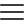

campus
Portal de curriculums

Inicio
Campus virtual
Biblioteca
Ayre
Escribenos
Hojas de vida de los estudiantes
Lucas Carvajal
ing. de sistemas
ver
Andrés Luna
ing. de sistemas
ver
Ana Rivera
ing. de sistemas
ver
Yuranis Botto
ing. de sistemas
ver
David Izquierdo
ing. de sistemas
ver
Andrés Lara
ing. de sistemas
ver
Juan Simancas
ing. de sistemas
ver
Andrés Rivera
ing. de sistemas
ver